Шестая часть цикла статей, подробно рассказывающих о протоколе MIDI.
Передача данных по MIDI-интерфейсу — это своеобразная "матрешка", протокол в протоколе, когда посредством MIDI-сообщений передаются данные, к MIDI отношения не имеющие. Нечто подобное нам уже встречалось в MIDI Time Code (см. четвертую статью цикла), где время в формате SMPTE и некоторые другие данные "упаковывались" в системные сообщения MIDI.
Организация MMA разработала два протокола передачи данных по MIDI. Сначала, в январе 1986 года, был предложен Sample Dump Standard (SDS) — стандартный способ передачи цифрового звука между семплерами и другими MIDI-устройствами, а несколько позже появился протокол MIDI File Dump, позволяющий передавать по MIDI-кабелю файлы любого формата.
До появления SDS обмен звуковыми данными между семплерами был возможен только двумя способами: либо с использованием дискет, либо прямым семплированием сигнала с выхода одного из семплеров другим. Оба способы были неудобны. Первый — тем, что формат файлов в разных устройствах мог быть несовместим, второй — тем, что звук подвергался лишнему цифро-аналоговому и аналого-цифровому преобразованию (на тот момент цифровых входов и выходов семплеры не имели). Раз звук находится в цифровом виде, то почему бы его не передавать по цифровому протоколу, тем более такому общепризнанному, как MIDI? Ответом на этот вопрос и стал SDS. Все семплеры имели MIDI-интерфейс, так что для обмена данными достаточно было всего лишь соединить устройства MIDI-кабелем. Просто и удобно!
Первым семплером, поддерживающим SDS, был Sequential Circuits Prophet 2000. Он имел уникальную возможность передачи семплов с удвоенной скоростью (для чего пропускная способность его MIDI-интерфейса была увеличена в два раза). Это привело к широкому распространению слухов о "быстром MIDI", "MIDI 2.0", однако больше ни один производитель не "баловался" удвоенными скоростями. Постепенно SDS оснащались все новые семплеры, и к 1990 году ситуация с поддержкой SDS выглядела так, как показано на рис. 1.
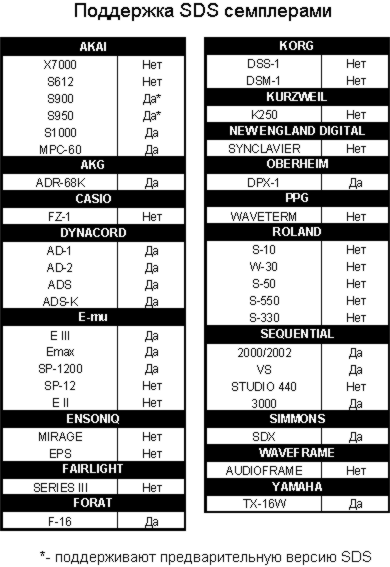
Впоследствии, с развитием персональных компьютеров, удобство SDS выросло вдвойне: записанный в семплер звук требовал редактирования, а заниматься этим гораздо приятнее в звуковом редакторе на большом экране компьютера, чем на маленьком дисплее семплера. Для этого достаточно было оснастить компьютер MIDI-интерфейсом (к слову, компьютеры Atari изначально имели встроенные MIDI-порты). Популярные программы (такие как Alchemy и Sound Designer на Macintosh) поддерживали SDS и имели богатый арсенал средств редактирования.
Читая вышеизложенное, вы, вероятно, окунулись в атмосферу конца 80-х — начала 90-х годов прошлого века. На сегодняшний день протокол SDS все реже используется в реальной работе. По двум причинам. Во-первых, появились виртуальные семплеры, для которых проблема обмена звуковыми данными вообще не стоит, так как они работают на одном компьютере с другими виртуальными "приборами" и совместно используют одну файловую систему. Во-вторых, SDS имеет очень низкую скорость передачи данных (ограниченную пропускной способностью MIDI). SDS разрабатывался в то время, когда семплеры имели несколько сотен килобайт оперативной памяти, но никак не мегабайты. Размер современных семплерных библиотек огромен, так что весь ваш творческий подъем может сойти "на нет" при попытке передать по SDS хотя бы часть звуковых данных из пэтча какого-нибудь рояля, имеющего отдельный семпл на каждую клавишу.
В современных аппаратных семплерах используются альтернативы SDS: протокол SMDI (работает через SCSI-интерфейс) и шина USB, по которой передаются данные в формате, специфичном для конкретного прибора. Тем не менее, почти все современные семплеры поддерживают SDS. Серьезные звуковые редакторы поддерживают как SDS, так и SMDI. А, например, старенький Sonic Foundry Sound Forge четвертой версии позволяет даже сохранять звуковые данные в формате SDS на диске (правда, с какой целью, не очень понятно).
Несмотря на свой почтенный возраст и медленную передачу данных, протокол SDS и по сей день остается вполне работоспособным и надежным средством передачи семплов, не требующим никаких дополнительных интерфейсов, кроме MIDI. Так что первую часть статьи посвятим SDS, а вторую — протоколу MIDI File Dump.
Коммутация
При передаче данных по MIDI используются два варианта коммутации устройств: открытая петля (одностороннее соединение) и закрытая петля (двустороннее соединение). В первом случае используется один MIDI-кабель, соединяющий MIDI-выход передатчика с MIDI-входом приемника (рис. 2а). Все очень напоминает обычную коммутацию секвенсора и синтезатора — секвенсор отправил сообщения и "забыл" про них; его, в принципе, не волнует, как там на них отреагировал синтезатор. Так как передатчик не получает ответа от приемника и не знает, удачно ли тот принял и обработал данные, после каждой отправленной партии передатчик делает паузу. Зачастую эта пауза значительно больше, чем реально необходимая, поэтому одностороннее соединение всегда медленнее, чем двустороннее.
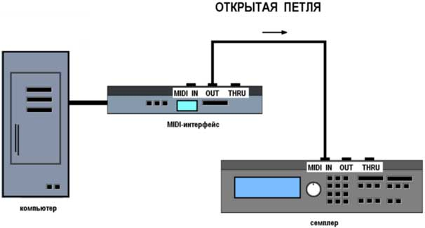
При двустороннем соединении требуются два MIDI-кабеля: выход передатчика соединяется с входом приемника, а выход приемника — с входом передатчика (рис. 2б). Такой способ соединения предпочтительнее, поскольку, во-первых, увеличивается скорость передачи (отсутствуют паузы), а во-вторых, повышается надежность (приемник может сообщить передатчику о сбойной порции данных и попросить переслать ее еще раз).
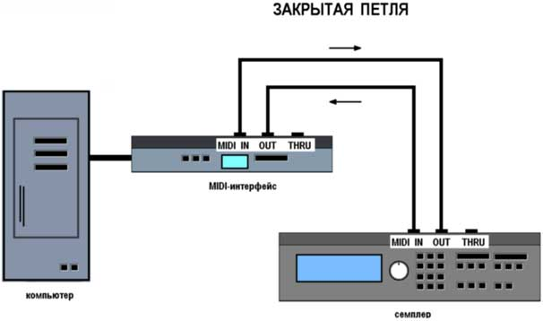
Сообщения SDS
Протокол SDS определяет три базовых сообщения: Dump Request, Dump Header и Data Packet. Они относятся к группе Non-Real Time универсальных сообщений SysEx. Приемник использует сообщение Data Request (а также четыре сообщения "рукопожатия" категории Generic Handshaking: ACK, NAK, WAIT и CANCEL). Передатчик — только Dump Header и Data Packet. Обоим устройствам присваивается свой идентификатор (Device ID), который передается в каждом сообщении SDS (подробнее об этом см. третью статью цикла).
Начнем с приемника. Если устройства соединены методом закрытой петли, то приемник может "попросить" передатчик отправить ему семпл с заданным номером. Для этого используется сообщение Dump Request (рис. 3). Номер семпла (байты "ss", LSB — первый) может быть в диапазоне от 0 до 16383. При получении запроса передатчик проверяет, имеется ли в его памяти семпл с заданным номером. Если да, то приемнику посылается сообщение Dump Header, содержащее общую информацию о семпле. Если нет — сообщение Dump Request игнорируется. Приемник ожидает заголовка Dump Header в течение нескольких секунд; если за это время ответа с передатчика не поступило, процесс передачи прекращается.
Сообщение Dump Header (рис. 4) описывает формат семпла и параметры петли (допускается одна петля типа sustain на семпл). Байты "ss ss" содержат номер семпла (аналогично предыдущему сообщению), байт "ee" — разрядность семпла в битах (от 8 до 28). Далее следуют три байта, содержащие частоту дискретизации. Правда, в необычном формате — в виде промежутка между звуковыми отсчетами, выраженного в наносекундах (наносекунда — одна миллиардная часть секунды). Первым следует LSB, а всего, таким образом, передается 21-битная величина (первый байт — бит с 0 по 6, второй — с 7 по 13, третий — с 14 по 20, так называемое правостороннее выравнивание).
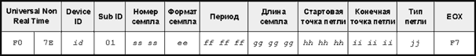
В качестве примера рассчитаем, чему будут равны эти три байта, если частота дискретизации составляет 44100 Гц. Промежуток между отсчетами в этом случае будет равен 0,000022676 сек (1 / 44100) или 22676 наносекунд (в шестнадцатеричном виде — 0x5894). Это число в двоичном виде записывается как 0101 1000 1001 0100. Выделяем биты с 0 по 6 и приписываем слева нулевой седьмой бит (признак MIDI-байта данных), получается 0001 0100, или 0x14. Биты с 7 по 13 — 0011 0001, или 0x19. Биты с 14 по 20 — 0000 0001, или 0x01. Итак, частота дискретизации 44100 Гц будет передана как 0x14 0x19 0x01.
Далее следует длина семпла (в машинных словах). Например, при разрядности 16 бит, частоте дискретизации 44100 Гц и времени звучания одна секунда, длина семпла будет равна 44100 слов (88200 байт). При разрядности 8 бит — 22050 слов (44100 байт). Если восьмиразрядный семпл содержит нечетное число отсчетов, он дополняется нулевым байтом до четного. Длина хранится в виде трехбайтовой величины, аналогично предыдущему полю (то есть максимально допустимая длина семпла равна 221 или 2 097 152 слов, или 4 Мб).
Завершает сообщение Dump Header информация о петле: в байтах "hh hh hh" содержится положение стартовой точки петли (смещение в словах от начала семпла), в байтах "ii ii ii" — конечной точки. Тип петли задается байтом "jj" (0x00 — воспроизводится в прямом направлении, 0x01 — сначала в прямом, затем в обратном, 0x7F — признак отключения петли). Поскольку не все семплеры (особенно старые) понимают значение 0x7F, для отключения петли можно установить ее начальную и конечную точку в одно значение.
Безусловно, главное сообщение передатчика, посредством которого передаются сами звуковые данные, — это Data Packet. Сообщение имеет структуру, показанную на рис. 5.
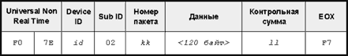
Сначала передается номер пакета (от 0 до 127), затем 120 байт данных и контрольная сумма. Общая длина сообщения, таким образом, составляет 127 байт. Она выбрана не случайно — для большинства MIDI-устройств минимальный размер входного буфера равен 128 байтам. Контрольная сумма вычисляется передатчиком путем последовательного выполнения операции XOR над всеми байтами сообщения, за исключением двух последних (самой контрольной суммы и признака конца сообщения EOX). Подробнее о логических операциях рассказано во врезке.
|
Логические операторы В двоичной арифметике широко используются так называемые логические (или, иначе, булевские, поразрядные) операторы. Все очень просто: в отличие от привычных операций типа умножения и сложения, когда используется все число, в поразрядных операциях участвуют одиночные биты. В микропроцессорах наиболее распространены три операции: AND (логическое И), OR (логическое ИЛИ) и XOR (исключающее ИЛИ). Результат их применения к двум битам показан в таблице на рис. 6. 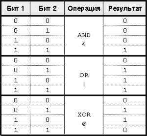 Так, операция AND дает в результате 1, только если оба бита равны 1. Операция OR — если хотя бы один из битов единичный, операция XOR — только если один из битов равен 1, а другой — 0. Несколько примеров показаны на рис. 7. Иногда применяются обратные операторы (NAND, NOR, XNOR), результат выполнения которых противоположен их "прямым" аналогам. 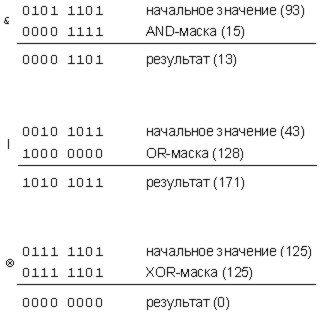 Поразрядные операторы позволяют манипулировать отдельными битами двоичного числа: устанавливать или сбрасывать единичные биты без влияния на другие, выделять из байта один или несколько битов и тому подобное. Все эти операции выполняются чрезвычайно быстро. Например, оператор XOR часто применяется для обнуления регистра, вместо загрузки числа 0 из памяти (что гораздо дольше). Какое бы число не находилось в регистре, применение к нему того же числа в качестве XOR-маски всегда дает 0 (что как раз и показано на рис. 7).
|
Чтобы передать звуковые данные по MIDI, их необходимо преобразовать в MIDI-байты данных (в которых, напомню, старший бит всегда нулевой). В данном случае используется левостороннее выравнивание. Например, если разрядность семпла составляет 12 бит, то один звуковой отсчет передается в виде двух байт. В первом байте содержатся биты с 11 по 5 исходного значения, во втором — с 4 по 0 (выровненные по левому краю). Например, 12-битное значение 0xFFF (в двоичном виде 1111 1111 1111) преобразуется в два байта 0111 1111 и 01111 1000. Если разрядность семпла лежит в пределах от 8 до 14 бит, то каждый звуковой отсчет передается в виде двух байт, от 15 до 21 бит — трех байт, от 21 до 28 — четырех. Таким образом, в 120-байтовый пакет в первом случае помещаются 60 отсчетов, во втором — 40, в третьем — 30.
Кроме того, отсчеты представлены в беззнаковой форме. Например, при разрядности 16 бит максимальной положительной амплитуде соответствует 0xFFFF, а максимальной отрицательной — 0x0000. Нулевая амплитуда записывается как 0x8000. Во многих звуковых форматах (в частности, в формате WAVE) используется знаковое представление, когда нулевой амплитуде соответствует значение 0x0000, максимальной положительной — 0x7FFF, а максимальной отрицательной — 0x8000. Поэтому после приема семпла может потребоваться его преобразование.
Сообщения "рукопожатий", посылаемые от приемника к передатчику, были рассмотрены в третьей статье цикла.
Взаимодействие устройств
Инициировать передачу семпла может как передающее, так и приемное устройство. В первом случае вы просто нажимаете кнопку на передней панели передатчика (либо выбираете соответствующую функцию из меню), после чего на его MIDI-выход передается сообщение Dump Header. Для приемника оно служит сигналом того, что сейчас будет передаваться семпл. Запросить семпл можно и с приемника (если устройства соединены методом закрытой петли). В этом случае приемник посылает на MIDI-вход передатчика сообщение Dump Request и ожидает ответной реакции в виде сообщения Dump Header.
Некоторые старые устройства передают семпл только после получения запроса, а сами инициировать передачу не могут. Например, семплер Akai S 900. С его передней панели нельзя ни запросить семпл с другого устройства, ни начать передачу. Так что, соединив MIDI-кабелями два Akai S 900, вы вряд ли сможете заставить их обменяться семплами по SDS, придется повозиться с дискетами.
После того как Dump Header отправлен, передатчик ждет ответной реакции от приемника не менее двух секунд. За это время приемник должен проанализировать заголовок и решить, сможет ли он принять семпл (поддерживается ли формат, достаточно ли памяти под семпл и т. д.). Если приемник готов принять семпл, он отправляет сообщение ACK, после чего передатчик начинает посылать пакеты данных. Если не готов — сообщение CANCEL или WAIT. В первом случае передатчик немедленно прекращает передачу семпла, во втором — ждет неопределенно долго, до тех пор, пока приемник не ответит либо подтверждением, либо отменой. Возможен вариант, когда заголовок Dump Header прошел неудачно, в этом случае приемник посылает сообщение NAK, а передатчик повторяет заголовок.
Если в течение двух секунд с момент отправки заголовка от приемника не поступило никаких сообщений, передатчик считает связь односторонней (открытая петля) и начинает передавать пакеты данных.
|
Семь раз проверь, потом отправь… В современных устройствах ручное управление памятью считается просто неприличным. Прибор сам в состоянии выделить блок нужного объема, а при необходимости — произвести дефрагментацию и прочие сопутствующие задачи. Однако в старых семплерах пользователь зачастую сам должен был контролировать процесс: перед загрузкой нового семпла убедиться, что для него достаточно памяти, а при замене одного семпла другим — что новый семпл не превышает по размерам старый. В совсем раритетных устройствах (таких, например, как Sequential Circuits Prophet 2000 и 2002) приходилось вручную выделять память под вновь загружаемый семпл. В противном случае, семпл с длиной большей, чем у текущего, будет обрезан, а в конце семпла с меньшей длиной останется кусок старого семпла.
|
Каждый пакет состоит из 127 байт (структура описана ранее). Из них 120 байт отводятся на сами данные. Нумерация пакета начинается с 0x00, доходит до 0x7F (127) и сбрасывается обратно в 0x00. Это позволяет приемнику различать новые пакеты и те, которые были посланы повторно из-за ошибок при передаче. После отправки пакета передатчик ждет от приемника ответа (ACK, NAK, WAIT или CANCEL) в течение 20 мс. Если за это время ответа не последовало, передатчик считает связь односторонней и начинает передачу следующего пакета.
В процессе получения пакета приемник вычисляет так называемую "бегущую" контрольную сумму. То есть, после получения первого и второго байта пакета выполняет над ними операцию XOR, сохраняя результат в специальной ячейке памяти. Затем, при поступлении третьего байта выполняет операцию XOR над ним и содержимым этой ячейки, полученный результат заменяет предыдущее содержимое ячейки. И так далее. Пример вычисления контрольной суммы для четырех байт 110, 93, 48, 11 показан на рис. 8.
В результате, к концу пакета над всеми его байтами уже проведена операция XOR, и контрольная сумма сосчитана. Если она совпадает с той, которую передал приемник в конце пакета, считается, что пакет прошел успешно. В случае двусторонней связи передатчик отвечает приемнику сообщением ACK и ждет следующего пакета. Если контрольная сумма отличается — отправляет сообщение NAK с номером сбойного пакета и ждет от передатчика его повторной пересылки. Если приемнику необходимо время для обработки пакета, он посылает передатчику сообщение WAIT. Передатчик ждет неопределенно долго, до тех пор, пока не придет одно из трех сообщений: ACK, NAK или CANCEL. В последнем случае, а также при получении сообщения, не входящего в категорию Generic Handshaking, передатчик немедленно прекращает отправку пакетов.
В процессе двусторонней передачи возможна ситуация, когда передатчик посылает пакет с одним номером, а получает от приемника сообщение NAK с другим. В этом случае, если передатчик не имеет возможности вернуться к требуемому номеру пакета и переслать его вне текущей последовательности, сообщение NAK должно быть проигнорировано. Подобная ситуация возможна и на приемном "конце": при получении сбойного пакета приемник отправляет сообщение NAK с одним номером, а в ответ может получить пакет с другим. В этом случае приемник оставляет сбойный пакет в покое, так, как будто он прошел нормально.
Процесс передачи пакетов продолжается до тех пор, пока все звуковые данные семпла не будут переданы. Даже если осталось менее 120 "звуковых" байт, последний пакет передается полностью, а неиспользуемые байты заполняются нулями. Если в процессе получения семпла у приемника заканчивается доступная память, он посылает передатчику сообщение Cancel.
Расширения SDS
Одно из основных действий при редактировании волновой формы семпла в звуковом редакторе — настройка границ петли (Loop Points). Это делается, как правило, путем проб и ошибок, хотя многие редакторы предлагают различные способы автоматизации процесса (например, сдвигая границы петли к точкам с нулевой амплитудой). В любом случае, результат нужно прослушать в контексте: семпл снова загружается в семплер, и, если результат окажется неудовлетворительным, процесс изменения петли и повторной загрузки повторяется. Учитывая длительность передачи семпла по SDS, настройка петель может занимать огромное время.
Однако зачем пересылать весь семпл заново, если изменились только границы петли? Это соображение, а также ограниченность информации о петлях в заголовке Dump Header (одна sustain-петля на семпл), привели к расширению протокола SDS двумя новыми сообщениями: Loop Point Transmission и Loop Point Request. Оба сообщения разместились в категории SysEx Non Real Time и имеют Sub ID 1 номер 5. Правда, не все семплеры их поддерживают.
Семпл может иметь до 16383 петель, на которые ссылаются по номеру. Естественно, для разных моделей семплеров максимальное число петель на семпл может отличаться.
Сообщение Loop Point Request обычно посылается компьютером и означает следующее: "Прошу дать позицию петли с таким-то номером у семпла такого-то". Структура сообщения показана на рис. 9, Sub ID 2 равен 2. Номер семпла задается двумя байтами "ss ss" (первым идет LSB), номер петли — байтами "bb bb". Петля с номером 0 является sustain-петлей из заголовка Dump Header. Если номер петли равен 0x7F 0x7F, то это означает, что запрашивается информация обо всех петлях семпла.
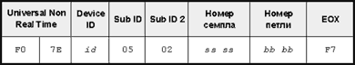
Ответом на сообщение Loop Point Request будет одно или несколько сообщений Loop Point Transmit. Их структура показана на рис. 10, Sub ID 2 равен 1. Стартовая и конечная точки петли, а также тип петли аналогичны сообщению Dump Header. Если номер петли равен 0x7F 0x7F, то это служит командой семплеру удалить все ранее заданные в семпле петли.

Недостатки SDS
Самый главный недостаток протокола SDS — очень медленная передача данных. Этот недостаток непреодолим и определяется физическими параметрами MIDI-интерфейса, имеющего пропускную способность 31,25 кБит/с. Подсчитаем, сколько времени требуется для передачи одной секунды монофонического звука с разрядностью 16 бит и частотой дискретизации 44100 Гц. Напомню, что один байт передается по MIDI-интерфейсу за 320 микросекунд.
Заголовок Dump Header имеет длину 21 байт (21 x 320 = 6720 мкс), после чего передающее устройство делает паузу (примем равной максимальному значению, две секунды). Все вместе составляет 2006,72 миллисекунды. Затем — пакеты данных. Сообщение Data Packet имеет длину 127 байт, из которых 120 отводятся под сами данные. Из-за того, что полноценные восьмибитные байты по MIDI не передать, исходные звуковые отсчеты кодируются, как описано ранее. При 16 битах на отсчет два звуковых байта кодируются тремя MIDI-байтами данных. Так что в 120 байт пакета помещаются только 80 реальных байт. Одна секунда цифрового звука в нашем случае занимает 88200 байт (16 бит x 44100 Гц). Следовательно, всего потребуется 1103 пакета (88200 / 80 байт на пакет).
При передаче методом закрытой петли после каждого сообщения Data Packet от приемника приходит подтверждение — сообщение ACK, занимающее 6 байт и требующее 1,920 мс на передачу. В идеале это сообщение высылается сразу же по получению пакета, а весь процесс сброса происходит без ошибок и повторной передачи. Тогда пара сообщений Data Packet/ACK требует 42,56 мс (127 x 320 мкс + 6 x 320 мкс). Умножая это число на 1103 пакета и прибавляя время на заголовок Dump Header, получаем 48950 мс, или почти 50 секунд. То есть, передача семпла занимает в 50 раз больше времени, чем продолжительность его звучания! При односторонней передаче ("открытая петля") это время еще больше, так как передатчик после каждого пакета пребывает в бессмысленном ожидании сообщения ACK, на что уходит еще 20 мс. В итоге время передачи увеличивается до 70 секунд. При разрядности семпла более 16 бит все выглядит еще печальнее.
Другой недостаток SDS — невозможность передачи стереосемплов. Здесь, правда, можно повозиться: разбить стереофайл на два моно и передать их по очереди, но это лишняя работа и дополнительное время на ожидание. Длина семпла в SDS не может превышать двух мегаслов (4 Мб), хотя, впрочем, и такой семпл будет передаваться около часа. Разрядность семплов ограничена 28 битами.
Наконец, по SDS не передаются такие важные параметры, как ключевая нота семпла, его имя и зона клавиатуры, которую он покрывает. Передающее устройство ничего не знает о приемном, например, каков диапазон допустимых номеров семплов. Кроме того, отсутствуют команды по удаленному управлению семплерной памятью. Так, очень кстати могла бы быть команда по удалению семпла. Операции по настройке пэтча нужно выполнять вручную, с панели прибора.
SMDI
Почти всех перечисленных недостатков лишен протокол SMDI (SCSI Musical Data Interchange, произносится как "смиди"). Как следует из названия, для передачи данных в нем используется SCSI-интерфейс, а скорость обмена данными с семплером становится почти такой же, как и с обычным жестким диском. Передача семпла по SMDI происходит в 100-300 раз быстрее, чем по SDS.
Протокол SMDI был разработан в 1991 году компанией Peavey, а первым устройством, поддерживающим его, стал семпл-плеер Peavey DPM-SP. Стоит отметить, что многие семплеры на тот момент уже использовали SCSI-интерфейс для подключения дисков и для загрузки семплов. Однако стандартного протокола для передачи семплов по SCSI не было, производители семплеров использовали собственное "закрытое" программное обеспечение. Ситуация сложилась странная: организация MMA, хотя и осознавала ограниченность SDS, но занималась исключительно MIDI, а в ANSI (американском национальном институте стандартов, утвердившим SCSI) считали передачу семплов по SCSI слишком узкой темой, поэтому там ей тоже всерьез не занимались. В общем, если бы не инженер Matt Isaacson из Peavey (интересно отметить, что до этого он был сотрудником компании Sequential Circuits, а после — CreamWare), работавший в то время над операционной системой DPM-SP, то, возможно, и по сей день не было бы столь распространенной альтернативы SDS.
Кроме передачи семплов, SMDI позволяет передавать обычные MIDI-сообщения. При наличии в студии нескольких семплеров можно создать на жестком диске одну базу данных семплов для всех устройств. Звуковые данные можно передавать посредством SMDI, а настройки пэтчей, специфичные для каждого семплера, — также по SMDI, но посредством сообщений MIDI SysEx. Вообще, может появиться естественное желание убрать MIDI-кабели подальше и соединять приборы по SCSI. Однако SCSI предназначен для передачи буферизованных данных большого объема (таких, например, как цифровой звук), а для интерфейса, передающего события реального времени, он подходит гораздо меньше. Так что MIDI еще послужит, и довольно долго.
На сегодняшний день большинство современных семплеров и звуковых редакторов поддерживают SMDI. Основное предназначение SCSI-порта в семплерах — непосредственное подключение дисковых накопителей (CD-ROM и жестких дисков). Протокол SMDI используется при необходимости редактирования семплов, что на большом экране компьютера доставляет одно удовольствие. Естественно, для этого в компьютере должен быть установлен SCSI-контроллер. Многие семплеры все еще поддерживают SDS, хотя, при современных объемах звуковых библиотек это, скорее, "аварийный" вариант. Наряду со SMDI все шире используется шина USB, а также программы, позволяющие управлять всеми параметрами пэтча и передачей самих семплов по USB. Скорость обмена в этом случае получается ниже, чем по SMDI, но все же несравнимо выше "тормозного" SDS. В таблице на рис. 11 показаны возможности нескольких аппаратных семплеров последних шести-семи лет по обмену семплами.
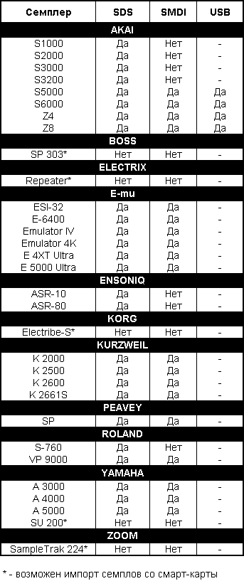
MIDI File Dump
Протокол MIDI File Dump предназначен для обмена файлами любого типа между устройствами, имеющими MIDI-интерфейс. Разработчики предлагают следующие применения протокола:
- обмен стандартными MIDI-файлами между секвенсорами (то есть, без использования дискет или сетевых жестких дисков);
- передача стандартных MIDI-файлов, содержащих карту темпа, между синхронизаторами и секвенсорами;
- передача данных, возможно в форме сообщений SysEx, между устройствами;
- передача файлов любого типа между компьютерами разной архитектуры и файловой организации, имеющими MIDI-интерфейс.
Для каждого файла передается его полное имя, так что возможна последовательная передача нескольких файлов (например, содержимого каталога) с минимальным вмешательством пользователя.
Сообщения File Dump (Request, Header и Data Packet) относятся к группе Non-Real Time универсальных сообщений SysEx, имеют Sub ID 1, равный 7, и начинаются с заголовка, показанного на рис. 12. Сообщение Header имеет Sub ID 2, равный 1, сообщение Data Packet — 2, сообщение Request — 3. Байт "ss" содержит идентификатор устройства — источника сообщения (широковещательный номер 0x7F здесь запрещен). Он нужен приемнику сообщения для того, чтобы в дальнейшем знать, какому передатчику отвечать.
Сообщение Request имеет структуру, показанную на рис. 13. В поле содержится тип запрашиваемого файла (4 ASCII-символа). Он может принимать одно из шести значений: "MIDI" (стандартный MIDI-файл), "MIEX" (MIDIEX, то есть файл, содержащий только сообщения SysEx в том виде, в каком они хранятся в буфере устройства), "ESEQ" (формат секвенсоров Yamaha), "TEXT" (текстовый ASCII-файл, содержащий символы с кодами, не превышающими 127), "BIN " (двоичный файл, то есть, по сути, любой файл MS-DOS), "MAC " (файл Macintosh, содержащий заголовок MacBinary). Если устройство получило сообщение Request с типом файла, который не поддерживается, оно должно ответить запросившему устройству сообщением Cancel.
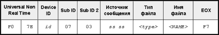
В поле содержится имя запрашиваемого файла. Длина имени не ограничена (она может быть и нулевой), а конец сообщения определяется по байту EOX. Отсутствие имени файла означает "прошу передать текущий загруженный". Имя файла может содержать также полный путь: с символами обратной косой черты (PC) или двоеточиями (Mac).
Структура сообщения Header показана на рис. 14. Поля и аналогичны сообщению Request, а в поле находятся четыре MIDI-байта, содержащие длину файла (LSB идет первым). Максимальная длина файла может составлять 228 или примерно 268 Мб. Если передающее устройство не имеет файловой системы, то в сообщении Header оно опускает имя файла, а в сообщениях Data Packet посылает текущее содержимое памяти. При приеме файла такое устройство также игнорирует имя и заполняет память содержимым принятого файла.
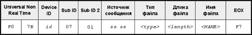
Сообщение Data Packet отличается по структуре от аналогичного сообщения SDS тем, что между номером пакета и данными вводится байт, содержащий число исходных (незакодированных) байт в пакете, минус один (рис. 15). Например, 64 байта исходного файла кодируются для передачи в 74 MIDI-байта данных, следовательно, поле будет равно 73. Всего в пакете может быть передано 128 закодированных байт, а максимальная длина всего сообщения Data Packet равна 137 байтам.
Для передачи по MIDI исходные байты данных кодируются так, что каждой группе из семи исходных байт соответствует группа из восьми MIDI-байт. В первом MIDI-байте посылаются семь старших битов исходных байт, в остальных — по семь оставшихся битов от каждого байта (рис. 16).
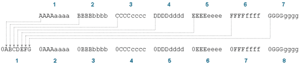
Если число исходных байт не делится без остатка на 7, посылается неполная группа, в которой первый байт содержит несколько (менее семи) старших битов из байтов исходной группы (рис. 17). Так как максимальное число передаваемых в пакете байт равно 128, то всего может быть передано 112 исходных (незакодированных) байт (16 x 7). Подобная схема кодирования увеличивает объем передаваемых данных всего лишь на 12% по сравнению с исходным.
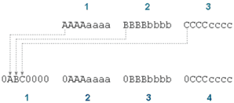
Процесс передачи файла выглядит очень похоже на процесс передачи семпла, описанный ранее. Устройство, желающее получить файл (или содержимое памяти другого устройства), может отправить передатчику сообщение Request. В течение 200 мс после этого передатчик должен ответить сообщением Header, WAIT или CANCEL. Отправка файла может начаться и без предварительного запроса, прямой посылкой в приемник сообщения Header.
После отправки заголовка передатчик ждет до 200 мс, и, если за это время не приходит ни одно из сообщений ACK, WAIT или CANCEL, передатчик считает связь односторонней и посылает первый пакет данных. Процесс передачи пакетов аналогичен SDS с той лишь разницей, что передатчик ждет от приемника ответа в течение 50 мс (а не 20, как в SDS), после чего, при отсутствии ответа, считает связь односторонней. После отправки последнего пакета передатчик посылает сообщение EOF (End Of File).
Подытожим вышесказанное. Протоколы SDS и MIDI File Dump, несмотря на перечисленные недостатки, — удобное и надежное средство для передачи данных между MIDI-устройствами. SDS более распространен, а MIDI File Dump более универсален, так как допускает передачу любых данных, в том числе и семплов (в виде двоичного файла).